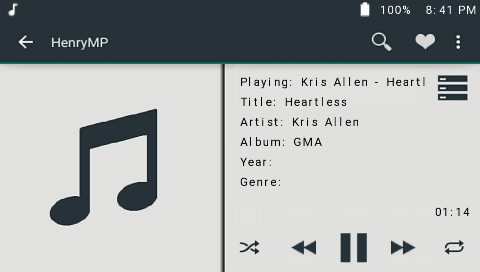
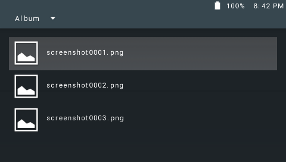
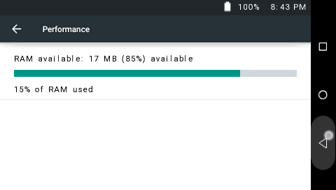
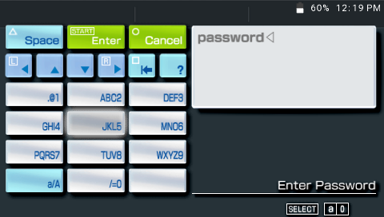
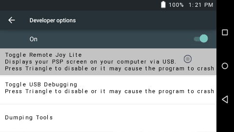

Welcome to CyanogenPSP
You're probably here because you've seen my project appear on my YouTube channel or my Google+, or one of the PSP hacking scene sites where I'd normally hang out. I've been maintaining this project for a year a few months now and by that, you should be able to conculde that I am an Android Enthusiast. My aim here is not to provide something that's way beyond the PSP's limitations, but to provide an altervative to a modernized UI design. This project pretty much lets you do anything a regular PSP with Custom Firmware would do, along with some nifty features all built-in one package. Below you will see the main features of this project. If you are looking for the change-log, you can find that here: here
Beautifully Revamped Homescreen

You're here cause you're probably tired of using the XMB, and you want expereince a new UI. It's time to dust of your PSP, and complement it with Android's latest and greatest design - The Android Lollipop UI. This UI mimics the lollipop design head to toe, without missing one pixel of detail. It also offers an app drawer which can be opened by pressing the app drawer button, which then gives you access to more apps and features.
Customize to your extent

From changing your wallpaper to pimping up your PSP with themes, icon packs and your own custom fonts! CyanogenPSP slightly mocks the well-known theme manager in CyanogenMod, by offering its minimal cutomization. You can toggle the gameboot, the boot animation, the day/night widget, and even one of android's well known features - the expanded desktop. While it doesn't do exactly what the Android's well known custom rom feature does, it offers its "PSP version" that behaves pretty much the same.
Manage your files

There isn't much to explain here, because it pretty much explains its self. CyanogenPSP's file manager lets you open and view sub folders, play your music files (MP3, BGM, WAV, AT3 and MOD files), open and view pictures (JPG, PNG and GIF). By pressing 'Select', it also lets you create folders, rename and delte folders/files. While the Game launcher lets you launch games, the file manager also has this as a built in feature.
Play Music

Play your music whenever, wherever. CyanogenPSP supports up to 5 types of audio files. These inlude MP3, BGM, WAV, AT3 and MOD files. Another cool thing is, CyanogenPSP lets you browse the web while your music is still playing, which is something the PSP restricts you from doing. Need to return to your homescreen while the music is playing? no problem. Press 'select' and it will do just that.
View Pictures

CyanogenPSP supports the 3 most widely used image files: JPG, PNG and GIF. View your pictures either from the file manager or the gallery app. CyanogenPSP also lets you take screenshots, without the use of any plugins. Just Hold the R button and tap triangle, and you should hear the screenshot shutter sound which indiciates that you've taken a screenshot. You can also replace your current wallpaper by pressing the sqaure button to open the prompt when viewing a picture, and pressing cross.
Manage your Performance

Need to save your juice while you're out? CyanogenPSP offers battery managment settings that helps you optimize your battery performance. You can either have it on high performance, balanced or power save mode. CyanogenPSP also lets you view your RAM usage, CPU states and overclock/underclock your CPU if you wish to. You can also view your avialable storage by selecting the "Storage Management" option and access USB mode if you wish to.
Prevent Unauthorized Access

Sure, the PSP lets you prevent unauthorized access to your web browser, but does it secure the whole PSP system? Yeah, I think not, and this is where CyanogenPSP's security settings kick in. While the PSP only lets you use a 4 digit pin lock, CyanogenPSP extends this to either a 20 character password, which can be written in any language or if you wish, a 4 digit pin lock.
Developer Settings

You might miss having all those options you had on a CFW, but no worries CyanogenPSP lets you dump your UMD's boot.bin, your flash0/flash1 and your memory. Why bother switching CFW's or using a particular homebrew, when you can get all of this in one package? CyanogenPSP also lets you view your PSP's screen on your laptop via the built in RemoteJoyLite Integration.
In the end it's just a PSP

This isn't some high end mobile device running android, it's just a PSP homebrew designed to look like it. While it offers a bunch of features in contrast to the XMB, in the end it lets you keep your PSP's main reason - to game. Launch your UMD backups, or PSN content (whether it be minis or PS1 classics) via the game launcher without any problems. Run your game plugins, homebews and emulators just as if you were running it on a Custom Firmware
Donations are welcome :)